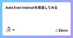
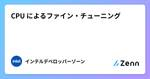
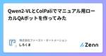
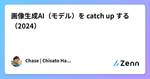
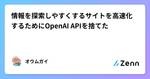

Zennの「LLM」のフィード
フィード

まだLLM API呼び出しで消耗してるの？LiteLLMによるAPI呼び出し共通化のススメ 1
1
Zennの「LLM」のフィード
こんにちはべいえりあです。いきなり煽りタイトルで申し訳ないのですが、今回はLiteLLMについて書いてみようと思います。 LiteLLMとは？ LiteLLMは様々なLLM APIをOpenAIフォーマットで呼び出せるサービスです。 https://www.litellm.ai/ LLM APIを共通のフォーマットで呼び出せるサービスとしては他にもLangChainなどもあると思うのですが、APIの呼び出し共通化が目的だとLangChainをインストールすると不要な機能／ライブラリも併せて大量にインストールされるので、必要最小限の機能があれば良いのであればLiteLLMがオススメです...
10時間前

ローカルLLM実装（GoogleColabolatory編）
Zennの「LLM」のフィード
はじめに はじめまして。データアナリティクスラボ株式会社 データソリューション事業部の平野です。 私は社内のラボチームに所属しており、生成AIに関する研究・勉強に取り組んでいます。 目的 昨今自分のローカルなPCやサーバー上で動かせるオープンソースのLLM（Large Language Model：大規模言語モデル）として様々なLLMがリリースされており、現状LLMで最高峰の性能であるChatGPTやGeminiに匹敵するほど性能が高いオープンソースのLLMも徐々に出てきています。 それに伴って、今後個人あるいは企業でオープンソースのLLMを利用したLLMシステム構築の需要が高ま...
10時間前

【LLM】LoRA まとめ
Zennの「LLM」のフィード
原理 事前にトレーニングされたモデルの重みをすべて凍結して、追加の重みの変更をトレーニングして行列に保存する。 また高ランクの行列を低ランクの行列の組み合わせに分解する機構を活用している。 構成 W0 ☛ 事前トレーニングされた重み行列が d * d の次元を持つ。(トレーニング中はフリーズ) 重み変化行列 ∆W ☛低ランク行列AとBとしてトレーニングする。 演算子としてのイコール ∆W = BA 二つの低ランク行列にすることで冗長なパラメータを削減できる。 (300,300) ☛ 90000のパラメータ数 (300,2),(2,300) ☛1200のパラメータ数 上記の2...
12時間前

LLMの重みでなんやかんや試してみる-①埋め込み層編-
Zennの「LLM」のフィード
このシリーズの大目的 このシリーズは、LLM(主にDecoder-Onlyで重みが公開されているもの)の内部をいじって遊んでみることでTransformerの新たな一面を見つけることができたらいいなという、ふわっとしたゴールに向かって進んでいきます。 今回のターゲット この記事では、まずモデルへの入力が最初に出会う「埋め込み層」を触っていこうと思います。 埋め込み層(Embedding Layer)には、Tokenizerによって文字列がtoken idの列に変換されたものが入力として入ってきます。 # こんなイメージ input_ids = [0, 5, 9, 43, 10] ...
15時間前

GraphAI 0.5.9
Zennの「LLM」のフィード
GraphAI 0.5.9がリリースされました。 主な変更点は以下。 深いnestedのnamed inputsサポート inputs: {a: {b: {c: [":data"], d: ":data2"}, e: ":data3" } } inputsでfunctionを追加 inputs: { length: ":arrayData.length()", flatArray: ":arrayData.flat()" } サポートするのは array: length() flat() object: keys() values() string: jsonP...
16時間前

Ollamaで体験する国産LLM入門 158
Zennの「LLM」のフィード
近年、AIの中でも大規模言語モデル（LLM）の研究開発が特に活発に進められています。日本でも日本語に特化した国産LLMの開発競争が熾烈を極めています。さらには、小規模でも高性能なLLMが登場し、GPUのない手元のPCでも簡単にLLMを動かせる時代が到来しました。 本書では、まずLLMを動かすための基本的な知識をわかりやすく解説します。LLMについて学ぶには膨大な知識が必要と思われがちですが、動かす（推論する）だけであれば、いくつかの重要なポイントを押さえるだけで十分です。 その上で、OllamaというLLM推論フレームワークを活用し、実際にいくつかの国産LLMを動かしてみます。Ollamaはローカルで動かせるオープンソースソフトウェア（OSS）でありながら、Google Cloud等のクラウドプロバイダーとの連携を強めており、今後はLLM推論フレームワークとしてのデファクトスタンダードになることが期待されています。 本書を通じて、これまでLLMに縁のなかったソフトウェアエンジニアの方々が、LLMの奥深い世界に触れるきっかけとなれば幸いです。
2日前

OpenAI Structured Outputsの動作原理
Zennの「LLM」のフィード
Structured Outputsとは与えたJSON Schemaに従ってGPTに出力させる機能。 動作原理について本家ブログに解説があった。Next tokenサンプル時に、与えられたJSON Schemaに従う範囲でサンプルすることで実現している。この方法をconstrained samplingと呼ぶ。 Introducing Structured Outputs in the API (August 6, 2024) Our approach is based on a technique known as constrained sampling or constraine...
2日前

Auto Evol-Instructを実装してみる
Zennの「LLM」のフィード
はじめに 東京大学の松尾・岩澤研究室が主催する2024LLM講座に参加し、大規模言語モデルの勉強をさせて頂いております。この講座の終盤でコンペティション（課題は現時点で不明）が開催されることになっておりますが、良い結果を残すためには何かしら差別化できるような技術的な工夫が必須になると思われるので、事前調査をしているところです。 LLMに関して不勉強な小職の戯言なのですが、小規模かつ個人的な開発力でそれなりの成果を得るためには、蒸留など、先人の成果を最大限に活用した、技術的な応用が一つの鍵になるのではないかと、浅はかにも想定しております。その中でも特に合成データ(Synthetic D...
3日前
日本語トークナイザーの作り方（トークナイザー後編）
Zennの「LLM」のフィード
はじめに これまで、松尾・岩澤研究室の投稿では、何度かトークナイザーについて触れています。 前回（トークナイザー前編）は、日本語トークナイザーを準備する意味について解説しましたが、今回は実際にトークナイザーをどのように作成したか、特に Team JINIAC(phase1)におけるtokenizerで工夫した点 Phase2で工夫したかった事 について書きたいと思います。 なお、一連の手順については、トークナイザー構築のナレッジとチームの取り組み紹介【Team Kuma】ですでに詳しく述べられています。参考にされてください。 トークナイザー構築のパイプライン データ取得に...
3日前
事前学習環境構築 ～シェルスクリプトによる再現性の担保～
Zennの「LLM」のフィード
はじめに GENIAC 松尾研 LLM開発プロジェクト Team Kumaの加藤純です。 今回、Tanukiモデルの事前学習環境について、必要なライブラリの調査、スクリプトの構築を担当しました。今回はその担当作業にあたっての取り組み内容を報告します。 報告にあたり、本記事で紹介している環境構築スクリプトの実演も含む勉強会を以下の日時で開催しました。 開催日時：2024年10月13日（日）17:00 - 19:00 テーマ：小型LlamaモデルのTransformer Engineを用いた事前学習の環境構築 また、勉強会の様子は動画としてアップロードされています。 この勉強会では、環...
3日前
Cohereで始める実践的AI開発: 最新LLMテクノロジーの活用ガイド
Zennの「LLM」のフィード
本書は、Cohereの最新テクノロジーを活用したAI開発の実践的ガイドです。LLMの基礎から高度な応用まで、段階的に学べるよう構成されています。RAG、ツール使用、プロンプトエンジニアリングなど、最新のAI技術を実際のビジネス課題に適用する方法を、豊富な例とともに解説しています。Cohereのプラットフォームを使いこなし、革新的なAIソリューションを開発するためのスキルを身につけることができます。 【概要】 ・内容：Cohereプラットフォームの概要、LLMの基礎知識、プロンプトエンジニアリングの技法、RAG（Retrieval-Augmented Generation）の実装、AIチャットボット開発の手順、セマンティック検索の構築方法、ツール使用によるLLMの機能拡張、Cohereのプラットフォームを使用した実践的なプロジェクト例 ・所要時間：約10時間 ・必須条件：プログラミングの基礎知識（特にPython）、AI・機械学習の基本的な理解 ・推奨環境：Cohereアカウント、Python 3.7以上 ・レベル：★★★☆☆（中級） この本を通じて、最新のAI技術を実際のビジネス課題に適用する方法を、豊富な例とともに学ぶことができます。Cohereのプラットフォームを使いこなし、革新的なAIソリューションを開発するためのスキルを身につけることが可能です。
3日前
NVIDIA NIMを試してみる。
Zennの「LLM」のフィード
Jetson NanoがJetpack4で止まってしまったので、Jetson Orin Nanoを買って遊び始めたコネクトーム・デザインの伊藤です。 Jetson Orin Nanoについてはまたの機会に書こうと思いますが、今回はNVIDIAの新しいクラウドサービスの話です。 1. NVIDIA NIM とは。 https://www.nvidia.com/ja-jp/ai/ 「生成AIを即座にデプロイする」と書かれています。 つまり今までNVIDIAのGPUは、ディープラーニングの分野では「学習が超絶速い」という文脈で言及されることが多かったのですが、このサービスは「推論実行環境」...
3日前

CPU によるファイン・チューニング
Zennの「LLM」のフィード
【開発と活用を推進するインテルの AI】 インテルはクラウドからデータセンター、エッジにおいて、あらゆる場所での AI 活用を目指す、ソフトウェアやハードウェアでの AI 開発、さらには AI ソリューションへの活用を動画で解説するWebサイトを公開しています。 https://www.intel.co.jp/content/www/jp/ja/artificial-intelligence/ai-development-and-utilization.html ＜AI 活用を動画で学ぶ＞ インテルのエキスパートたちが、ソフトウェアやハードウェア、AI ソリューションに関してのノウハウを...
3日前
大規模言語モデルの推論能力比較実験：o1モデルは本当に賢いのか？ 2
Zennの「LLM」のフィード
はじめに はじめまして。株式会社松尾研究所 経営戦略本部でインターンをさせていただいております、木口 佳南(@KananK_AI)と申します。 大阪国際工科専門職大学でAIを専攻している学部4年生で、普段はAIの開発から事業推進まで幅広い取り組みを行っております。どうぞよろしくお願いいたします。 本ブログは、株式会社松尾研究所 経営戦略本部を統括している金 剛洙さん(@kangsoo_kim_)のブログである、大規模言語モデルはエリート就活生を超えるかを参考に執筆いたしました。 大規模言語モデルの推論能力はどれくらい進化している？ 昨今、大規模言語モデル(LLM)の性能向上に各社...
4日前
Tanuki-8x8B-vision-exp学習作業記録・tips【前編】
Zennの「LLM」のフィード
はじめに 松尾・岩澤研究室のGENIACプロジェクト[1]において，Tanukiモデルを画像入力にも対応させたマルチモーダルモデル「Tanuki-8B-vision"」[2]および「Tanuki-8x8B-vision-exp」[3]の開発に携わり，公開することができた（なお，マルチモーダル開発は本プロジェクトの主目的ではなく，私を含む有志の参加者により実験的に行われたものである）．その中で，私は特にTanuki-8x8B-vision-expの開発を中心として行った． この記事では，2回に分けてTanuki-8x8BをLLaVA-JPのコードを用いてLLaVA化してVisionモデ...
4日前
モデル学習後のポスト処理（加工・変換・アップロード）について【Team Kuma】
Zennの「LLM」のフィード
はじめに GENIAC 松尾研 LLM開発プロジェクト Team Kumaの加藤 純です。 今回、Team Kumaで構築したモデルについて、学習後のポスト処理のスクリプト構築を担当しました。 本記事では、その担当作業にあたっての取り組み内容を報告します。 また、チーム全体の取り組み内容については、以下Paper & Hackのイベントにて報告していますので、ぜひご覧ください。 目的 LLaMa2-Accessoryを利用して学習したMegaBlocksのMoE（dropless MoE）モデルを、 Transformerライブラリで利用できるHuggingFace形式...
4日前
インテル® Gaudi® 2 アクセラレーターで実行する大規模言語モデル (LLM) の推論を最適化する方法
Zennの「LLM」のフィード
Hugging Face の Optimum Habana ライブラリーを使用して、さらなる大規模言語モデルの最適化を進めています。 Hugging Face と Habana Labs では最近、GPT-2、GPTNeoX、GPT-J、OPT、LLAMA などのモデルを対象に、Optimum-Habana ライブラリーを使用したインテル® Gaudi® アクセラレーター / インテル® Gaudi® 2 アクセラレーターで実行する複数の LLM 推論リファレンス・モデルを公開しました。 これらのモデルもほかの LLM と同様に、Hugging Face がホストするレポジトリーを使用し...
4日前

Qwen2-VLとColPaliでマニュアル用ローカルQAボットを作ってみた 1
Zennの「LLM」のフィード
はじめに 株式会社ファースト・オートメーションCTOの田中(しろくま)です！ 弊社では製造業向けのRAGを使ったチャットボットの開発を行っていますが、RAGが普及してきた昨今においてまだまだ課題があるなと感じているのが、 マニュアルのような画像と文書の複合したドキュメントの読み取り です。 例えばPC操作の説明書などは良い例かなと思うのですが、画面スクショに矢印が入っていたり、それに対して説明が入っている文書は通常のRAGとの相性が悪いです。 以下は経産省が提供しているgBizINFOというサービスの操作説明資料を抜粋したものです。 元のPDF資料はこちら このように、図と文書が...
4日前

画像生成AI（モデル）を catch up する（2024）
Zennの「LLM」のフィード
Ai Hoshino generated by FLUX1.1 pro みなさん、画像生成AI、キャッチアップできてますか？！ 私は最近だと Text-to-Text の LLMモデルばかりを扱っているのですが、画像生成もそろそろキャッチアップしないとなということで、記事を書きつつまとめていきたいと思います。 普段は会社経営をしつつ、フリーランスのMLエンジニアやデータサイエンティストとして活動してます。直近ではシリコンバレーの AIスタートアップで MLE（Machine Learning Engineer）をしていましたが、諸々の事情でリソースが空いてしまったので、LLM を組...
5日前

情報を探索しやすくするサイトを高速化するためにOpenAI APIを捨てた
Zennの「LLM」のフィード
はじめに 最近のサービス開発では、AIっぽいことを行おうとする際にLLMを活用することは当たり前になってきました。 しかしLLMの選定はあまり行われずOpenAI APIをそのまま活用するというケースが多いのではないでしょうか？ そこで今回はgroqというサービスを使用し、LLMの精度と速度などを比較し、他の選択肢もあるよ～というのを伝えられたらと思います 宣伝 groqに乗り換えて高速になりました、ぜひ使ってみてください https://knotix.net groqとは https://groq.com/ このサービス、OpenAI APIからの乗り換えも用意で利用料金も...
5日前